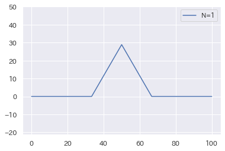
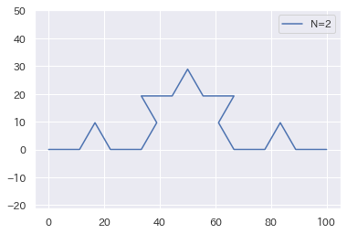

NumPy と グラフ作画#
Numpyは、科学計算やデータサイエンス、機械学習の基礎となる基本的なライブラリです。 配列をベクトルや行列として効率よく扱うことができます。
今回は、グラフ作画用のモジュール matplotlib とあわせて、使い方を学んでいきます。
準備#
Pythonで拡張機能を用いたプログラミングをするときは、 まずモジュールをインポートして使います。
Numpyモジュール#
Numpy モジュールをnpという名前でインポートします。
NumPyの配列は、科学技術計算のため開発されたリストの高効率＆高速版です。
リストは、np.array()によって配列に変換して使うことができます。
配列: リストの高速版
配列
本ノートでは、NumPyの配列のことを単に「配列」と呼びます。
NumPyは、Python 標準ライブラリではありませんが、数列(数値の入った配列)を扱うとき、 使わない理由はありません。どんどん活用していきましょう。
Matplotlib モジュール#
Matplotlib は、リストや配列などを描画する定番のライブラリです。 出版に耐えうる高品質なグラフを作成することができます。
Colab上で、グラフを日本語表示したいときは、 日本語化されたmatplotlibをあらかじめインストールして用います。
!pip install japanize_matplotlib
import japanize_matplotlib #日本語化 matplotlib
sns.set(font="IPAexGothic") #日本語フォント設定
NumPyやMatplotlibは、最初にまとめて、 インポートするようにしておくと良いでしょう。
モジュールの準備
import numpy as np
%precision 3
import pandas as pd
import matplotlib.pyplot as plt
import seaborn as sns
try:
import japanize_matplotlib #matplotlibの日本語化
except ModuleNotFoundError:
!pip3 install japanize_matplotlib
import japanize_matplotlib
sns.set(font="IPAexGothic") #日本語フォント設定
数列#
まず、NumPyの数列（数値の入った配列）を生成する方法をなれておきましょう。
等差数列#
np.arange()は、range()のNumPy版です。
整数が並んだ数列を作るときに使います。
要素数を指定した数列#
np.linspaceは、範囲と要素数を指定した数列を作ります。
要素数によっては、整数列になるとは限りません。
array([-10. , -8.462, -6.923, -5.385, -3.846, -2.308, -0.769,
0.769, 2.308, 3.846, 5.385, 6.923, 8.462, 10. ])
数値の型
NumPyの配列は、C/C++ の数値型に由来する数値の種類を表す型を持っています。
dtypeプロパティで確認することができます。
astype()メソッドを使うことで、数値の型を変換した新しい配列が得られます。
定数列
要素数を指定して、同じ値からなる配列を作るには、次のようにも書けます。
乱数列
array([0.868, 0.987, 0.731, 0.953, 0.758, 0.659, 0.094, 0.517, 0.606,
0.113, 0.816, 0.745, 0.84 , 0.151, 0.046, 0.647, 0.821, 0.221,
0.24 , 0.986, 0.409, 0.866, 0.789, 0.618, 0.232, 0.936, 0.751,
0.395, 0.351, 0.954, 0.871, 0.425, 0.164, 0.345, 0.102, 0.448,
0.2 , 0.641, 0.906, 0.417, 0.157, 0.944, 0.319, 0.247, 0.942,
0.076, 0.865, 0.273, 0.003, 0.674, 0.006, 0.345, 0.4 , 0.85 ,
0.24 , 0.078, 0.969, 0.235, 0.443, 0.773, 0.884, 0.219, 0.895,
0.084, 0.529, 0.316, 0.518, 0.526, 0.279, 0.924, 0.676, 0.451,
0.391, 0.526, 0.545, 0.497, 0.151, 0.74 , 0.079, 0.12 , 0.653,
0.11 , 0.591, 0.024, 0.274, 0.385, 0.994, 0.355, 0.802, 0.817,
0.778, 0.651, 0.587, 0.7 , 0.323, 0.544, 0.948, 0.774, 0.985,
0.823])
array([6, 3, 2, 5, 5, 6, 2, 1, 5, 5, 3, 5, 5, 4, 6, 6, 5, 5, 2, 4, 1, 2,
5, 4, 1, 5, 3, 2, 3, 5, 2, 1, 5, 1, 4, 3, 4, 4, 2, 4, 1, 6, 4, 6,
4, 5, 1, 6, 1, 6, 4, 4, 3, 3, 6, 6, 3, 2, 4, 4, 3, 4, 1, 6, 6, 5,
1, 1, 3, 3, 3, 6, 2, 4, 4, 1, 5, 1, 2, 2, 4, 5, 3, 4, 2, 3, 1, 5,
6, 2, 1, 5, 1, 4, 6, 6, 2, 6, 1, 5])
NumPyと計算#
NumPyの1次元配列はベクトルとしても計算できます。
つまり、同じ大きさな配列を用意すると:
次のようなベクトルと解釈して計算することもできます。
スカラー値は、全ての要素に演算が適用されます。
NumPyの配列は、少し癖がありますが、一度に計算できるので便利です。
練習: ベクトルの計算
ベクトルとしたとき、 1. 絶対値（ノルム）を求める 2. 二つのベクトルのなす角を求める（内積と絶対値の利用） 3. ベクトルの長さを1にして正規化する
数列の計算#
数列 [-5, -4, -3, -2, -1, 0, 1, 2, 3, 4, 5] に対して、 次の関数を適用して得られる数列を求めよ。
もしNumPyを使わないと
NumPyを使えば
練習問題: 放物線
-10〜10 の区間の30個の数列に対し、 を適用した数列を求めよ。
グラフの描画#
数列は、グラフ化すると、視覚的にみやすく、特徴が理解しやすくなります。
[-10. -9.31 -8.621 -7.931 -7.241 -6.552 -5.862 -5.172 -4.483 -3.793 -3.103 -2.414 -1.724 -1.034 -0.345 0.345 1.034 1.724 2.414 3.103 3.793 4.483 5.172 5.862 6.552 7.241 7.931 8.621 9.31 10. ] [-40. -33.341 -27.158 -21.451 -16.219 -11.463 -7.182 -3.377 -0.048 2.806 5.184 7.087 8.514 9.465 9.941 9.941 9.465 8.514 7.087 5.184 2.806 -0.048 -3.377 -7.182 -11.463 -16.219 -21.451 -27.158 -33.341 -40. ]数列 x, yを表示して比べても、xとyの関係性はわかりません。
Matplotlib でグラフに表示してみると、視覚的にわかりやすくなります。
ユニバーサル関数#
次は、y=sin(x)のグラフを書いてみましょう。
import math
x = np.linspace(-10, 10, 100)
y = math.sin(x)
plt.plot(x, y)
plt.grid(True)
---------------------------------------------------------------------------
TypeError Traceback (most recent call last)
セル20 を /Users/kimio/Git/sphinx/ai2022/code/numpy.ipynb in <cell line: 3>()
1 import math
2 x = np.linspace(-10, 10, 100)
----> 3 y = math.sin(x)
4 plt.plot(x, y)
5 plt.grid(True)
TypeError: only size-1 arrays can be converted to Python scalars
これは、math.sin(x)は、NumPyの配列に対応していないためにエラーになります。
ユニバーサル関数
配列xの各要素ごとに関数を適用して計算するNumPy向けの関数のこと
Python のふつうの関数は、np.frompyfuncでユニバーサル関数に変換することができます。
np.sin(x)
sin(x)のユニバーサル関数は、よく使うのでnp.sin(x)でも定義されています。
import math
sin = np.frompyfunc(math.sin, 1, 1)
x = np.linspace(-10, 10, 100)
y = sin(x)
plt.plot(x, y)
plt.grid(True)
グラフの書き方#
の例から、グラフの書き方を学びましょう
- x 軸の数列を作成する
- y 軸の数列を計算する
- グラフの大きさ、ラベルなどを設定
plt.plot(x, y)でグラフにプロット
x = np.linspace(-10, 10, 100)
y = np.sin(x)
plt.figure(figsize=(10, 2)) #グラフの大きさを指定
plt.plot(x, y, label='sin(x)')
plt.legend() #ラベルの表示
plt.title('y=sin(x)')
plt.xlabel('x')
plt.ylabel('y')
plt.grid(True) #グリッド
練習問題
- のグラフに書き換えてみよう
- とを同じグラフに書いてみよう
- と同じグラフに書いてみよう
円の描画 (媒介変数)#
円は、 ですね。 つまり、媒介変数を用いると、次のように直せますね。
t = np.linspace(-np.pi, np.pi, 100)
x = np.cos(t)
y = np.sin(t)
plt.figure(figsize=(5,5))
plt.ylim(-1.1, 1.1)
plt.plot(x, y)
plt.show()
練習問題
リサジュー図形を描画してみよう。
plt.subplot()を使うと、1枚の図に複数のグラフが書けます。
コースワーク：コッホ曲線#
コッホ曲線を書いてみましょう。
ヒント: 辺ABの座標を, とすると、 ABを三等分にする点,$Q(x_q, y_q)は次のようになる。
長さPQを1辺とする正三角形の頂点は
これが深さN=1のコッホ曲線です。

それぞれに辺に対し、３等分して正三角形を作っていきます。 これを繰り返していくと、深さNのコッホ曲線が得られます。

再帰関数をマスターすると、Nが大きくなったときでも簡単に書けます。